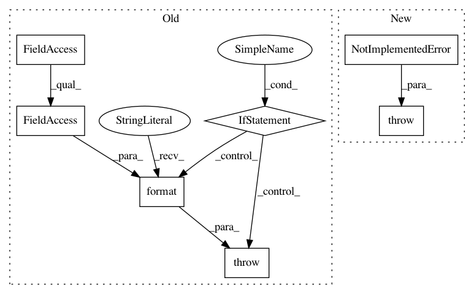

cf549e81df04f14177d449be4ffee3f56222acd4,brian2/stateupdaters/GSL.py,GSLContainer,get_codeobj_class,#GSLContainer#,40
Before Change
from ..codegen.runtime.GSLcython_rt import GSLCythonCodeObject
device = get_device()
if isinstance(device, CPPStandaloneDevice):
from ..devices.cpp_standalone.GSLcodeobject import GSLCPPStandaloneCodeObject
// In runtime mode (i.e. weave and Cython), the compiler settings are
// added for each `CodeObject` (only the files that use the GSL are
// linked to the GSL). However, in C++ standalone mode, there are global
// compiler settings that are used for all files (stored in the
// `CPPStandaloneDevice`). Furthermore, header file includes are directly
// inserted into the template instead of added during the compilation
// phase (as done in weave). Therefore, we have to add the options here
// instead of in `GSLCPPStandaloneCodeObject`
// Add the GSL library if it has not yet been added
if "gsl" not in device.libraries:
device.libraries += ["gsl", "gslcblas"]
device.headers += ["<stdio.h>", "<stdlib.h>",
"<gsl/gsl_odeiv2.h>",
"<gsl/gsl_errno.h>",
"<gsl/gsl_matrix.h>"]
if sys.platform == "win32":
device.define_macros += [("WIN32", "1"),
("GSL_DLL", "1")]
if prefs.GSL.directory is not None:
device.include_dirs += [prefs.GSL.directory]
return GSLCPPStandaloneCodeObject
if prefs.codegen.target == "auto":
target_name = auto_target().class_name
else:
target_name = prefs.codegen.target
if target_name == "cython":
return GSLCythonCodeObject
elif target_name == "weave":
return GSLWeaveCodeObject
else:
raise NotImplementedError(("Selected stateupdater is GSL stateupdater, while "
"target language is {language} (either selected or only "
"one available): GSL was not implemented for {language}."
"\nSet target language to weave or cython, or device "
"to cpp_standalone in order to use GSL "
"integration").format(language=prefs.codegen.target))
def __call__(self, obj):
"""
Transfer the code object class saved in self to the object sent as an argument.
After Change
device_name = [name for name, dev in all_devices.iteritems()
if dev is device]
assert len(device_name) == 1
raise NotImplementedError(("GSL integration has not been implemented for "
"for the "{device}" device."
"\nUse either the "cpp_standalone" device, "
"or the runtime device with target language "
""weave" or "cython"."
).format(device=device_name[0]))
def __call__(self, obj):
"""
Transfer the code object class saved in self to the object sent as an argument.
In pattern: SUPERPATTERN
Frequency: 3
Non-data size: 7
Instances
Project Name: brian-team/brian2
Commit Name: cf549e81df04f14177d449be4ffee3f56222acd4
Time: 2017-10-27
Author: marcel.stimberg@inserm.fr
File Name: brian2/stateupdaters/GSL.py
Class Name: GSLContainer
Method Name: get_codeobj_class
Project Name: masa-su/pixyz
Commit Name: 99a7406291265397b453ffb7f7c148e58ed68f47
Time: 2020-01-13
Author: kaneko@weblab.t.u-tokyo.ac.jp
File Name: pixyz/losses/entropy.py
Class Name:
Method Name: StochasticReconstructionLoss
Project Name: masa-su/pixyz
Commit Name: 1b7eb4148747bd674e15adfa1b3851f0406c356d
Time: 2020-01-19
Author: kaneko@weblab.t.u-tokyo.ac.jp
File Name: pixyz/losses/entropy.py
Class Name: StochasticReconstructionLoss
Method Name: __init__